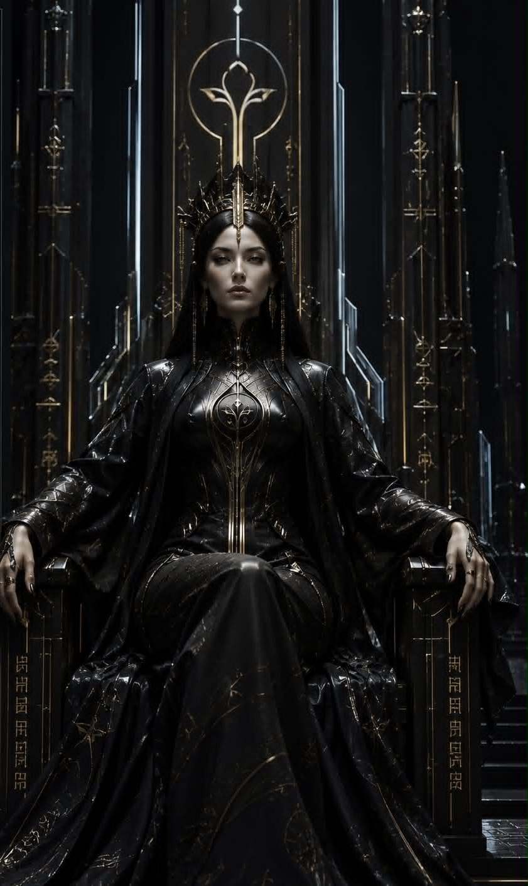

House of the First Monolith
Black Chronoa
“Memory shapes destiny. We endure, so that others may become.”
The central clan of the universe. From the capital of Cindra on Achronox, they guard the First Monolith and dress in void black threaded with chrono gold.